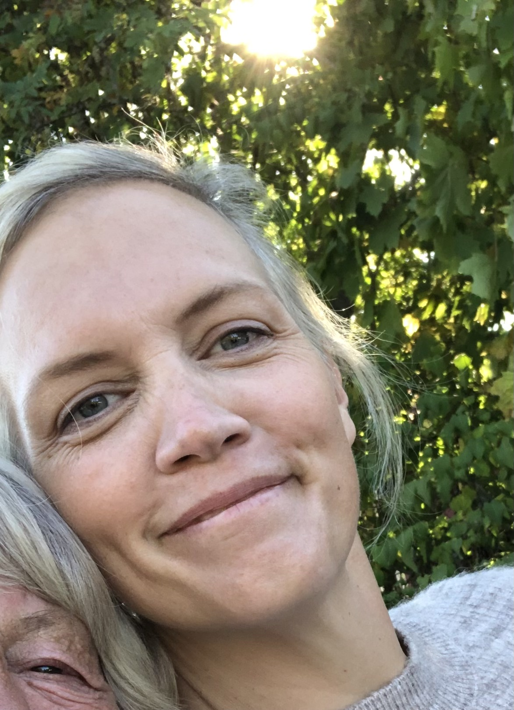

My Resume

I constantly want to learn more and explore what it is to be human. I have worked at a theater and now I am eager to learn everything I can about web development, e-commerce and AI.
Summery
At the end of may in 2024 I will have finished my 2 year long higher vocational education to become a e-commerce project manager. Before that I worked for almost 12 years as a dramapedagog and 9 of those years I spent at a theatre where I met the younger audience in different ways. Sometimes we talked and explored the subjects that the play was about. Other times it was all about lowering the threshould to the theatre. I have seen projects through from idea until its finished. I see my self as someone who isn't afraid to think out of the box and someone who enjoy change and have a need to learn more and never stand still.
Education
- 2008-2011 Dramapedagog at Västerbergs Folkhögskola and Högskolan i Gävle
- 2022-2024 E-commerce Product Manager at Uddevalla Higher Vocational Education. With courses in:
- Agila Product Methodology
- advanced e-commerce trading solutions
- business economics
- graphic production for digital channels
- digital product managment
- Digital Business - business models & value systems
- SEO and Web analysis
- Digital marknadskommunikation
- Webbteknik & UX-design
- Omnichannel & E-commerce
- Affärssystem och eHandelslösningar
- 2024 The Complete 2024 Web Development Bootcamp at Udemy.com
Work Experience
- 2011-2012 Dramapedagog in Vingåkers Kulturskola
- 2010-2013Dramapedagog Freelance
- 2013-2023 Dramapedagog at Malmö Stadsteater
Skills
- customer service
- project managment
- Thinking out of the box
- socializing
Contact